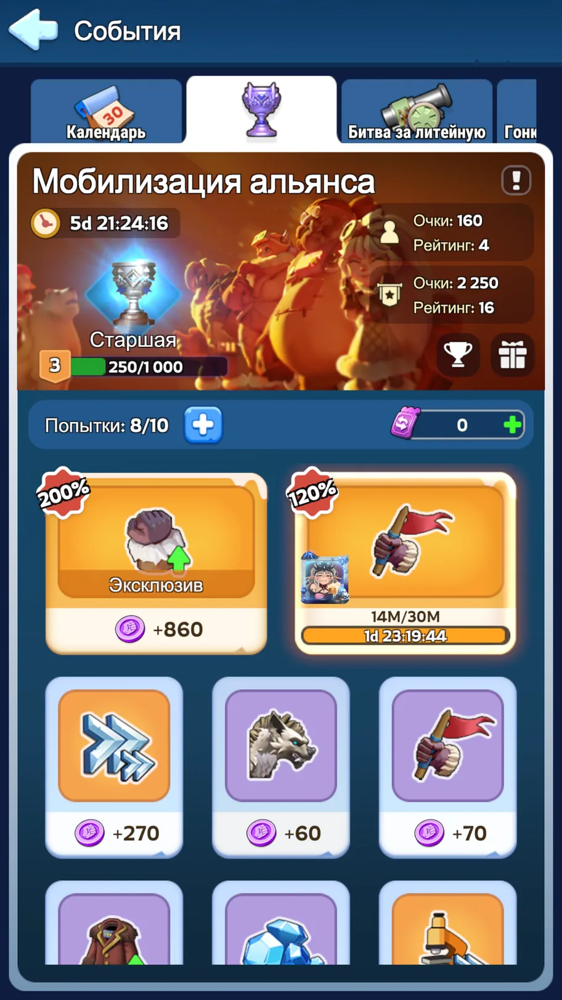
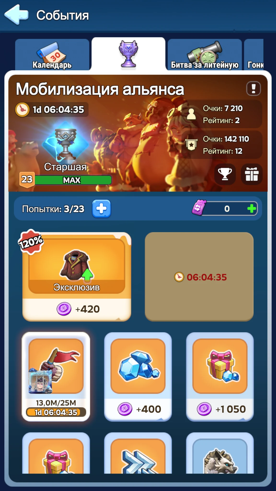
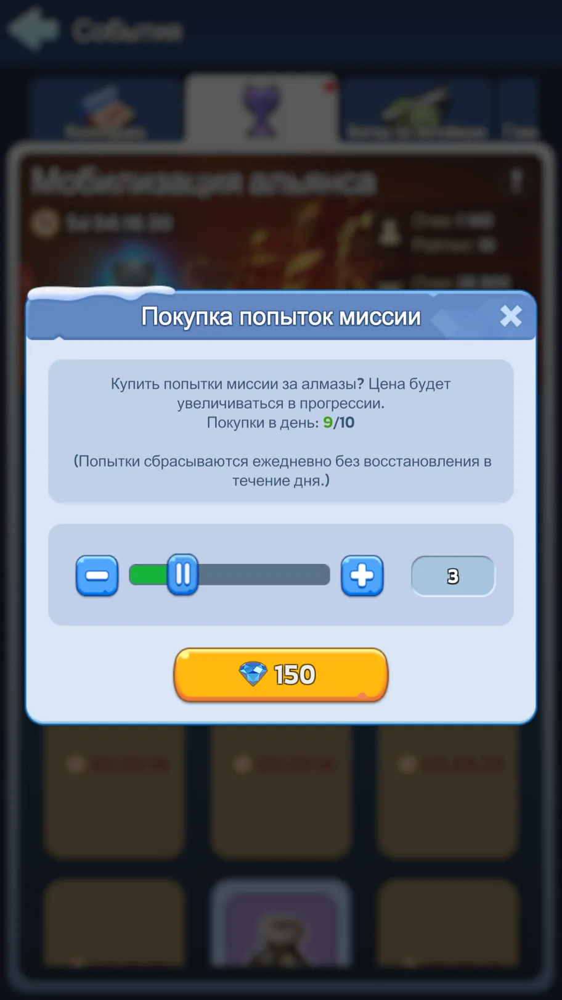
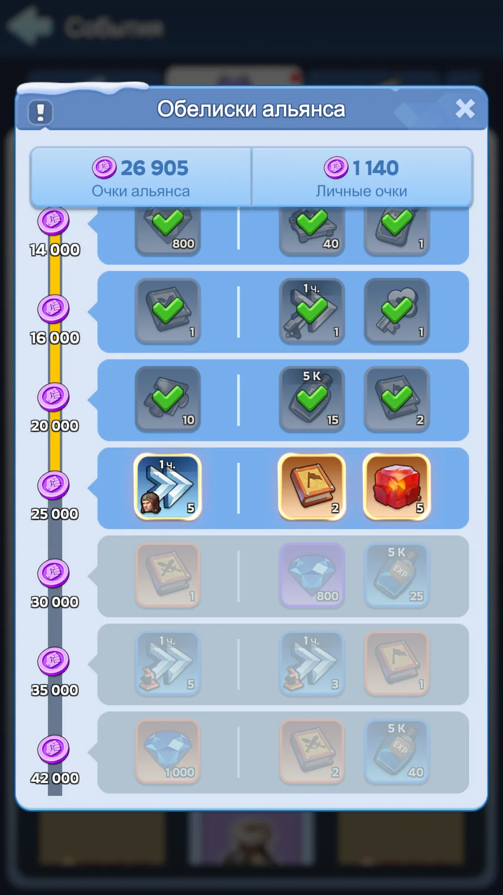

При дисциплинированном выборе заданий, ежедневной покупке трёх дешёвых попыток и нормальном использовании личных миссий этот результат набирается без необходимости сжигать накопления.
1. Главный принцип
Мобилизация — не отдельный режим, ради которого нужно ломать развитие аккаунта. Это надстройка над обычной рутиной. Перед тем как собрать войска, вернуть марши с ресурсов или пройти Маяк, сначала смотрим, можно ли взять подходящее задание и получить очки за действие, которое всё равно было бы сделано.
Лучший источник очков. Подводим очереди к завершению заранее и принимаем задание перед сбором готовых войск.
Почти бесплатные очки. Удобно брать перед сном или перед долгим офлайном, заранее отправив марши на клетки.
Берём из общего пула, когда это совпадает с Маяком и обычной тратой выносливости. Банки выносливости специально ради Мобилизации не пьём.
2. Какие задания брать
✓ Основной пул
- Тренировка / повышение войск.
- Сбор ресурсов.
- Убийство зверей. Совмещаем с очисткой Маяка: звери из заданий Маяка тоже засчитываются.
- Полярные Ужасы. По возможности присоединяемся к обычным рейдам альянса вместо отдельного расхода выносливости.
✕ Не ради Мобилизации
- Ускорения, строительство и исследования.
- Снаряжение губернатора и талисманы.
- Снаряжение героев, камни эссенции, виджеты и редкие материалы.
- Фрагменты героев, огненные кристаллы и другие накопительные ресурсы развития.
- Трата гемов и покупка наборов — если нет параллельного события, где эта трата уже запланирована.
3. Личные задания: 200% и 120%
Главные попытки тратим прежде всего на личные задания. Один раз в сутки доступна повышенная ценность 200%, остальные хорошие личные задания идут с 120%. Именно здесь тренировка войск и сбор ресурсов дают лучший результат за одну попытку.


- Если подходит 200% тренировка — принимаем её перед завершением очередей.
- Если выпал мусор — не хватаем его из страха потерять попытку. В начале дня личное задание можно роллить примерно раз в 5 минут; ждём подходящий вариант, пока откат короткий.
- С каждым завершённым личным заданием восстановление становится длиннее. Ближе к концу дневного лимита уже важнее планировать, чем бесконечно ждать идеальный ролл.
- На сбор удобно заранее выставить марши и принять миссию незадолго до их возвращения.
4. Каждый день покупаем три попытки за 150 гемов
Три дополнительные попытки ежедневно стоят суммарно 150 гемов. Для Мобилизации это одна из немногих обязательных трат: дешёвые попытки превращаются в дополнительные очки и повторяемые сундуки события.

5. Два бесплатных билета выбора личного задания
За шкалу Обелисков альянса в течение события получаем два бесплатных билета выбора личного задания. Это аварийный инструмент для самого ценного сценария — 200% тренировки войск.

- Держим очереди найма близко к завершению.
- Если подходящей 200% тренировки нет и ждать следующий ролл уже нельзя — используем билет и выбираем тренировку вручную.
- Важно: 200% через билет доступен, пока в этот день ещё не закрыто личное задание. После этого билет выбирает только 120% миссию. Поэтому такой расход планируем заранее.
- В последние дни события не даём билетам сгореть. Идеал всё ещё 200% тренировка; если окно уже потеряно и иначе билет пропадёт, разумнее забрать полезную 120% тренировку/сбор, чем оставить его неиспользованным.
6. Почему три попытки за гемы выгодны
За каждые 200 очков Мобилизации после открытия повторяемой награды приходит очередной Сундук Мобилизации. Внутри могут быть гемы, мифический универсальный фрагмент, Lucky Hero Gear Chest, ускорения и опыт усиления снаряжения. Поэтому дешёвые дополнительные попытки выгодны только если превращать их в нормальные задания.
Три дешёвые попытки должны приносить несколько сотен очков, а не уходить на «что попалось». Тогда 150 гемов работают на прогресс, а не просто исчезают.
7. Что игнорируем даже за красивые цифры
По умолчанию игнорируем всё, кроме тренировки войск, сбора ресурсов и фарма зверей/Полярных Ужасов. Причина не в том, что остальные задания невозможно выполнить, а в цене ресурсов: те же ускорения, гемы, фрагменты, снаряжение и талисманы обычно выгоднее тратить в СвС, Мощи государств, Колесе Фортуны и других профильных событиях.
8. Для R4/R5: чистим общий пул
R4 и R5 могут обновлять общие задания. Этим нужно пользоваться регулярно: плохая доска провоцирует игроков сжигать запасы, хорошая — сама направляет альянс в безопасные активности.
Что обнуляем
- Любые задачи на прямую трату ускорений.
- Строительство и исследования, если они требуют специально форсировать развитие.
- Снаряжение губернатора, талисманы, снаряжение героев и редкие материалы их улучшения.
- Фрагменты героев, огненные кристаллы, истинное золото, питомцы и другие накопительные ресурсы, если такие задания уже доступны на возрасте государства.
- Трата гемов без подходящего параллельного события.
- Покупка наборов / пополнение, если конкретный донатер заранее не попросил оставить задачу.
- Любое другое задание, которое не укладывается в правило: войска / сбор / звери / Ужасы.
Что оставляем
- Тренировку и повышение войск.
- Сбор ресурсов.
- Зверей и Полярных Ужасов.
- Ситуативную дорогую задачу, если она сейчас даёт двойной зачёт в другом событии.
- Конкретную задачу, которую заранее попросил оставить игрок, готовый её выполнить без ущерба аккаунту.
9. Финальный алгоритм на весь цикл
Каждый день сразу покупаем 3 попытки за 150 гемов.
Смотрим личные миссии. Главные цели — 200% тренировка и хорошие 120% тренировка/сбор.
Перед сбором готовых войск или возвратом маршей с ресурсов сначала принимаем подходящую миссию.
Если очередь найма не дотягивает совсем немного — допустимо подтянуть её малым объёмом ускорений, ориентир до 2 часов на лагерь.
Из общего пула добираем сбор ресурсов, зверей и Полярные Ужасы. Зверей совмещаем с Маяком; банки выносливости отдельно под Мобилизацию не открываем.
Два бесплатных билета держим прежде всего под 200% тренировку, когда войска вот-вот закончатся, а нужной личной миссии нет.
Не расходуем ускорения, снаряжение, талисманы, фрагменты, гемы и другие дефицитные ресурсы без параллельного выгодного события.
R4/R5 регулярно вычищают плохой общий пул и оставляют игрокам безопасные задания.
Не тратим попытки на слабые задачи. При полном цикле такая дисциплина даёт 6000+ очков без саморазрушения аккаунта.